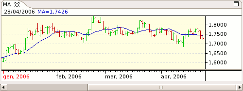

Moving Average - MA

Parameters
Label: The text that identifies the indicator
Color: Indicator's color
Input: The input data field use
Period: The period to use
Type: The type of MA method to use:
SIMPLE
EXPONENTIAL
WEIGHTED
WILLIAM'S